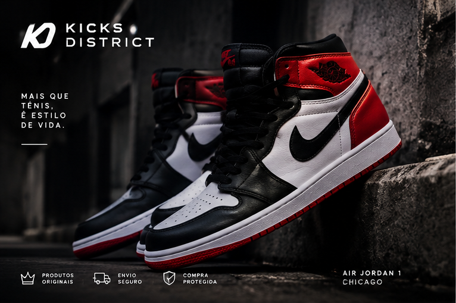
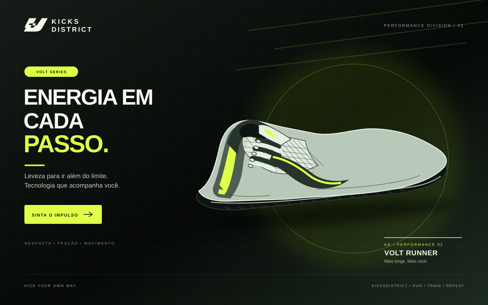
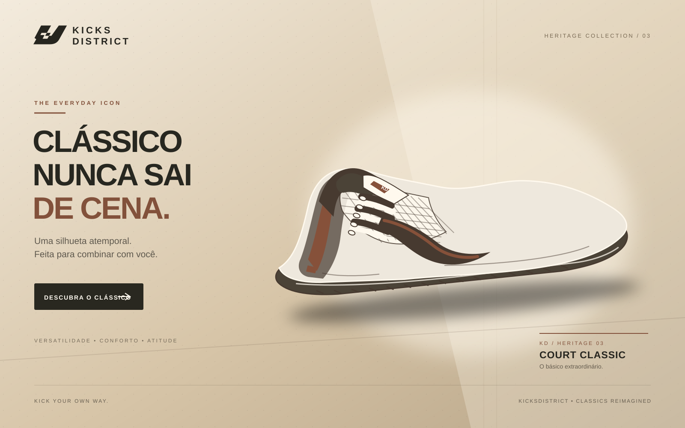
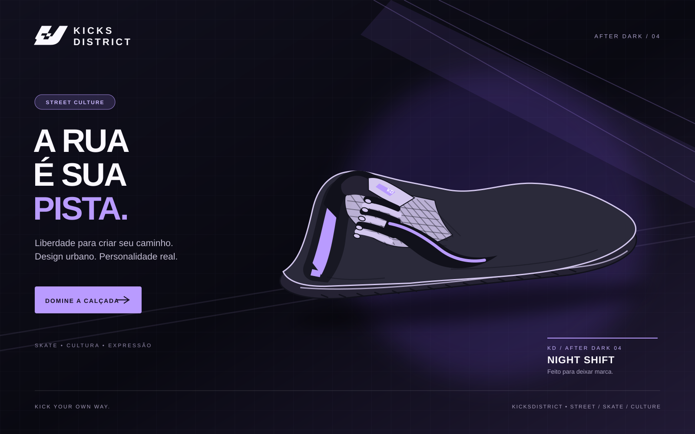

Sneaker culture
Your city.
Your kicks.
Sneakers que carregam personalidade. Descubra os modelos do catálogo Kicks District.

Campanhas



Kicks District
Mais que um tênis.
Uma identidade.
A Kicks District nasce da cultura sneaker e do streetwear: cada par é uma forma de se expressar na cidade. Aqui, o tênis é o protagonista.